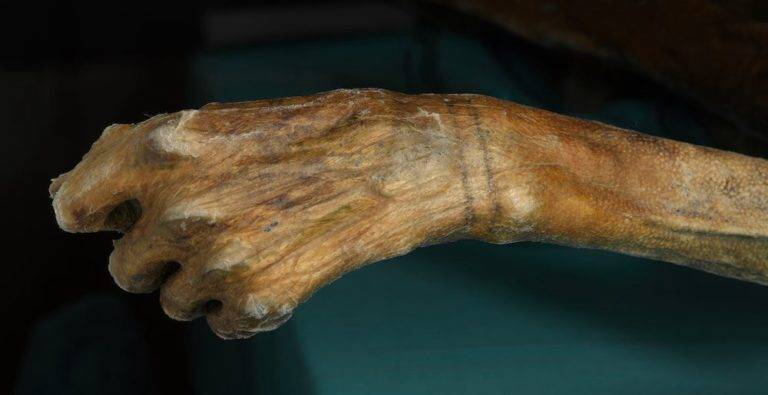
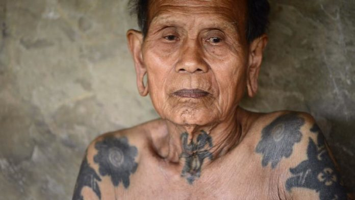
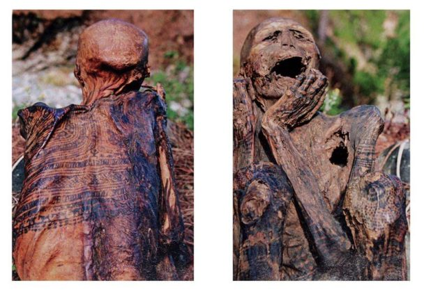
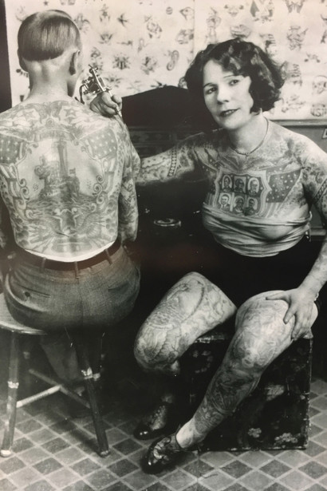
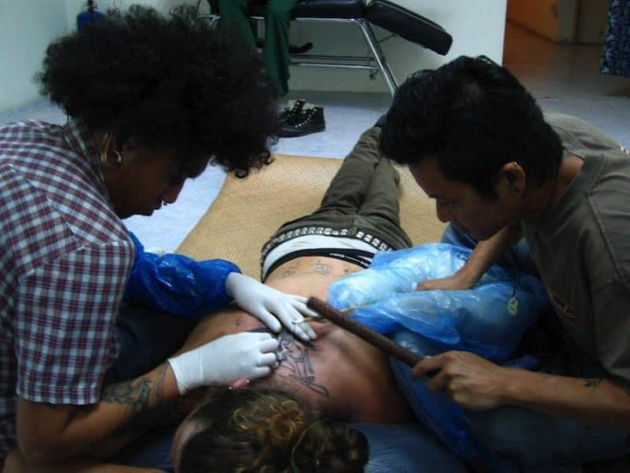

Історія татуювань, від стародавніх часів до сучасності
Коли і де були виконані перші татуювання
Насправді у нас є тверді докази того, що татуювання є найдавнішою формою мистецтва після виявлення татуювань на муміфікованій шкірі. Вважається що найдавніші свідчення людських татуювань відносяться до 3370 році до 3100 року до нашої ери.
Історія татуювань налічує кілька тисячоліть
Крижаний Оці був виявлений у вересні 1991 року. Його прізвисько походить від місця, де він був знайдений в Альпах Отзал. Його тіло природно муміфіковано і збережено, що робить його найстарішою мумією в Європі.
Тіло Оці містить в загальній складності 61 татуювання в різних місцях, причому більшість з цих татуювань розташовані на його ногах. Уважно вивчивши склад речовини, вчені прийшли до висновку, що для створення татуювань використовувалася сажа або камінний попіл.
У той час як Оці може бути свідченням перших татуювань, відомих людству, інші епохи протягом всієї історії показують довгу і багату історію татуювань. Існують докази цього з більш ніж 49 різних місць, розташованих по всьому світу, де були виявлені татуйовані мумії і їх останки.
Місця де були зображенні татуювання на останках людей включають: Аляску, Монголію, Гренландію, Єгипет, Китай, Судан, Росію і Філіппіни. Всі ці відкриття пов’язані з різними періодами давньої історії. Деякі з них відносяться до 2100 року до нашої ери.
Стародавні традиційні практики татуювань
Оскільки перші татуювання відносяться до древніх цивілізацій, причини появи татуювань на шкірі підживлюються різними теоріями. Ці теорії відображають місце розташування і культуру самих цивілізацій. Давайте більш детально розглянемо деякі з цих цивілізацій і деякі теорії про те чому вони почали наносити татуювання на свої тіла.
На деяких кладовищах в західному Китаї в провінції Синьцзян було виявлено кілька мумій з татуйованою шкірою. Деякі з них датуються 2100 р до н.е., в той час як інші докази значно молодші, близько 550 р до н.е. У стародавніх китайських практиках татуювання вважалася варварським і піддавалося сильної стигматизації.
В древньокитайській літературі народні бандити і герої мають татуювання. Також вважається, що засуджені злочинці досить часто роблять татуювання на обличчі. Це робилося для того, щоб попередити інших членів суспільства, що цій людині не можна довіряти.
Дослідження різних шрамів, знайдених на муміфікованому тілі жриці Хатор, дозволяє припустити, що татуювання могло бути способом лікування тазового перитоніту
Ця теорія підтверджується тим фактом, що практично немає ніяких доказів, ні фізичних, ні художніх, щоб татуювання виконувалися на чоловіках. Однак ця практика змінилася в період мероітів, між 300 р до н.е. і 400 р до н.е., коли нубійским чоловікам робилися татуювання.
Популярні стилі татуювань на протязі всього часу
До цього часу вони були зарезервовані для невеликого населення, в основному тих, хто зайнятий в індустрії розваг. Повністю татуйовані люди стали популярною привабливістю самі по собі.
Татуювання були не дуже поширені або соціально прийнятні до середини 20-го століття
Одним з найвідоміших татуйованих людей 1800-х років був Джон О’Рейлі. Його ретельно продуманий і повний боді-арт зробив його популярною персоною в музеях і цирках, де його татуювання залучали і дивували публіку.
Джон О’Рейлі був відомий як татуйований ірландець, і у нього було безліч складних татуювань, що покривали все його тіло. Одне з найбільш ранніх згадок про татуювання Джона О’Рейлі було в статті Бруклінського Daily Eagle. Випуск, випущений 22 лютого 1887 року підкреслює його виступ на боксерському поєдинку. Вони згадують, що його татуювання огидні і є відображення його варварських практик.
Протягом 1920-х років косметичні татуювання стали дуже популярними серед жінок. Багато жінок наносили татуювання з популярними тенденціями макіяжу на обличчях, оскільки сам макіяж був занадто дорогим, щоб його купувати. Звичайні косметичні татуювання включали брови і підводку для губ.
Традиційні татуювання були все ще мало поширені суспільстві і були не дуже прийнятними в соціумі. В основному це були так звані ізгої, такі як артисти цирку, моряки і злочинці, які робили собі татуювання. Оскільки татуювання були настільки неприйнятні для спільноти, більшість жінок тримали свої косметичні татуювання в секреті.
Однак татуювання все ще не були прийняті суспільством. Ті, хто отримав номер соціального страхування, зробили це більше за потребою, ніж за бажанням. Люди з татуюванням соціального страхування не розглядалися, як ті ж, хто мав декоративне або особисте татуювання. Татуювання були прийняті тільки для виконавців, моряків і злочинців. Але не на чесних членах суспільства.
Інструменти, які використовувалися для створення татуювань
З часом змінювалися не тільки соціальні уявлення та популярний дизайн, а й інструменти і чорнила, використовувані для нанесення татуювань. Для сучасних машинок інструменти виготовляються з різних матеріалів.
Інструменти татуювання, які використовують в Полінезії, вимагають, щоб двоє людей робили татуювання. Ці інструменти складаються з простої голки і молотка. Художники- майстри тату роблять кілька маленьких надрізів на шкірі. Чорнило потім безпосередньо забиваються в шкіру, де були зроблені надрізи.
Подібні методи спостерігаються в племінних спільнотах, де культура татуювань відображає право на відхід. Стародавні єгипетські голки для татуювань були виготовлені з бронзи. Голки бували різних розмірів, щоб створювати як складні, так і базові дизайни.
Перші татуювання використовували саморобні чорнила. Вони ймовірно за все були роблені з золи, сажі, і змішані з маслом або грудним молоком. Чорнила татуювань Самоа традиційно робляться з канделябра, який тліє на гарячому вогні. Сажу потім збирають з палаючого горіха і змішують з цукром і водою.
Сучасне обладнання для татуювання
Перша електрична машинка була запатентована Самюелем О Рейлі. Дизайн був заснований на модифікованій версії електричної ручки, створеної Томасом Едісоном. З появою електричних татуйованих машинок, популярність тату різко зросла.
Чорнила використовувані в тату, були створені з використанням геологічних або мінеральних джерел. Чорне чорнило були зроблені з використанням оксиду заліза або вуглецю, а кіновар використовувалася для червоного кольору. Різні відтінки оранжевого, червоного і жовтого були зроблені з використанням різних сполук кадмію.
В останні час сучасні технології почали відходити від пігментів на мінеральній основі Органічні пігменти в теперішній час використовуються набагато частіше. Сучасні чорнило також містять різні наповнювачі, сполучні речовини і консерванти.
Висновок
Татуювання є невід’ємною частиною деяких культур. Західному світі знадобився час, щоб декоративні татуювання стали соціально прийнятними. Тільки за останні 50 років татуювання ставали дедалі популярнішими і популярнішими.
Свідоцтво татуювання в древніх цивілізаціях є захоплюючим. Татуювання з минулих цивілізацій мали зв’язок з медичним лікуванням, на відміну від косметичної цінності, яку вони несуть сьогодні. Протягом всієї історії про татуювання все ще багато чого можна знати і дізнаватися.